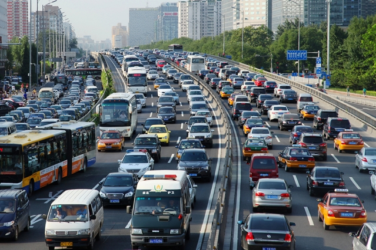

Grenergy Editorial Research
Published August 1, 2023
In 2019, transportation accounted for 33% of emissions in the United States without accounting for the full lifecycle of transportation-related emissions.
Travel and tourism are responsible for about 8% of global carbon emissions. Due to this, the travel sector plays a major role in climate change, one of the biggest risks to tourism, humankind, and the future of the planet. The biggest contributors to tourism's carbon footprint are air travel, automobiles, and other modes of transportation. While energy is needed for all forms of transportation, some are more effective and environmentally friendly than others. It matters how you get to, from, and through your destination.
Operating an electric vehicle is significantly less expensive than operating a standard car. Even automobiles powered by biodiesel use less gasoline! Making the transition to an eco-friendly car can cut your gasoline expenses in half! Expenses will also decrease due to decreased maintenance costs from car parts such as brake adjustments in electric vehicles. They don't require any of the regular maintenance that comes with having a gas engine, such as oil changes. Purchasing an electric automobile might also result in a tax credit of up to $7500. When you apply for this tax credit during tax season, make sure you are knowledgeable about the tax regulations in your state. While the tax credit will differ for each vehicle, most environmentally friendly cars will reimburse you for your expenses!
While avoiding flights is one of the most important pieces of eco-friendly travel advice, it's not always possible. When planning to fly, make sure to check out airlines that are actively investing in clean, biofuel technology, such as KLM and Lufthansa. In 2019, KLM became the first airline in the world to transport customers on a commercial biofuel trip from Amsterdam to Paris. Lufthansa has over 1,000 biofuel flights between Hamburg and Frankfurt to date. These airlines rely on using biofuels as their source of fuel which often consists of wood chips, agricultural waste, as well as plant oils. This one replacement can cut carbon emissions by up to 80%.
Private cars account for the majority of the emissions from the transportation industry. While the growth in emissions from the production and usage of cars is not as rapid as it is in other industries, such as retail, the issue still needs to be addressed as streets become more crowded and the air becomes less clean. Using public transportation more often than driving a personal vehicle is one of the best methods to cut emissions and protect the environment. By limiting the number of private cars on the road, many towns have successfully reduced CO2 emissions by up to 50%.